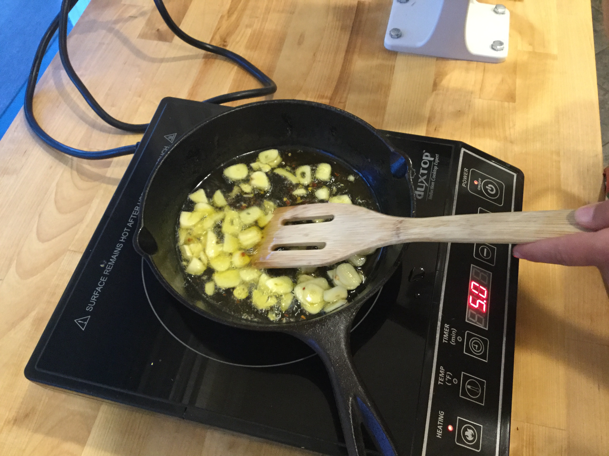
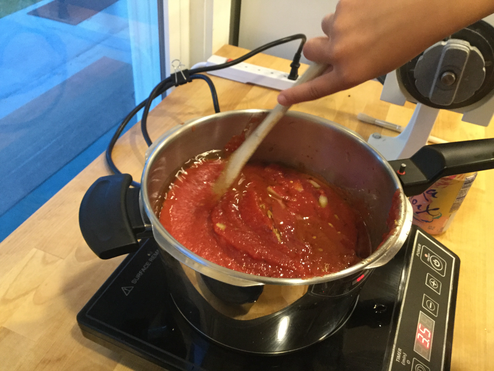

First, chop and cook the garlic in olive oil until golden.
Next, open the canned tomatoes and pour them into a large pot. Add the garlic, salt, and pepper.


Cook on medium and stir occasionally and add more seasoning if needed. Time to get started on the salad!
next thing up: salad